2023–24 · EUSS Motorsport, Frame & Body department · EM-04
Formula Student head restraint: sizing and FEA
The previous head restraint study did not show that the part met the 890 N load required by the rules, and did not check its size against the drivers. I resized it from driver measurements, then compared three support concepts in FEA under a centred and a worst-case edge load. The selected design reached safety factors of 2.16 and 1.35, where the original two-beam concept failed at 0.85 and 0.60. It passed its scrutineering check at Formula Student Spain 2024.
- SolidWorks
- SolidWorks Simulation

- 890 N Rule load, applied over an 80 mm circle at the centre and at the edge
- 0.60 → 1.35 Worst-case safety factor, original concept to selected design
- 200 → 240 mm Restraint length, to give the tallest driver a 50 mm margin
- 3 concepts Two beams, three beams, and two beams running under the plate
01Requirements
A study from December 2022 had proposed a design with simulations and a material list. It did not show compliance with the 890 N requirement at every point on the surface, and the size had not been checked against each driver. I set three goals: verify the strength at any point, improve the design if needed, and confirm the dimensions suit every driver.
| FSG 2024 rule | Requirement |
|---|---|
| T5.7.1 | A head restraint must limit the rearward motion of the driver's head |
| T5.7.2 | Vertical or near vertical. At least 150 mm wide and high. Padded with at least 40 mm of approved energy-absorbing material. No more than 25 mm from the back of each driver's helmet, with the helmet contact point at least 50 mm from any edge |
| T5.7.3 | The restraint and its mounting must withstand 890 N applied rearward at any point on its surface |
| Packaging | The restraint must attach to the main hoop |
The earlier study had also benchmarked eleven teams' head restraints. Its conclusions still held: one fixed restraint for all drivers, sized from the drivers' heights, with the shape left as a free choice.
02Sizing for the drivers
I checked the helmet contact point of the shortest and tallest drivers against the 50 mm edge distance in T5.7.2. Both passed, but the tallest driver had only 10 mm of margin, and the measurements had been taken in the older car, which had a different firewall and other elements. I increased the restraint length by 40 mm, from 200 mm on the EM-03 to 240 mm on the EM-04, raising that margin to 50 mm.
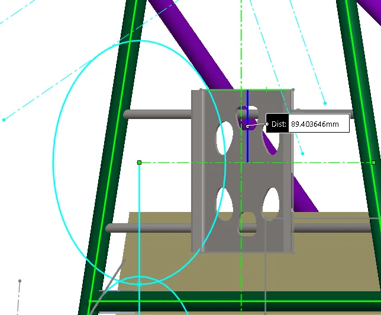
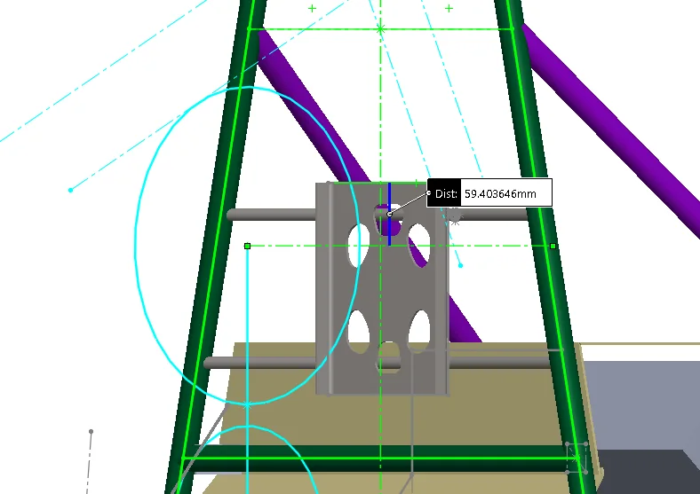
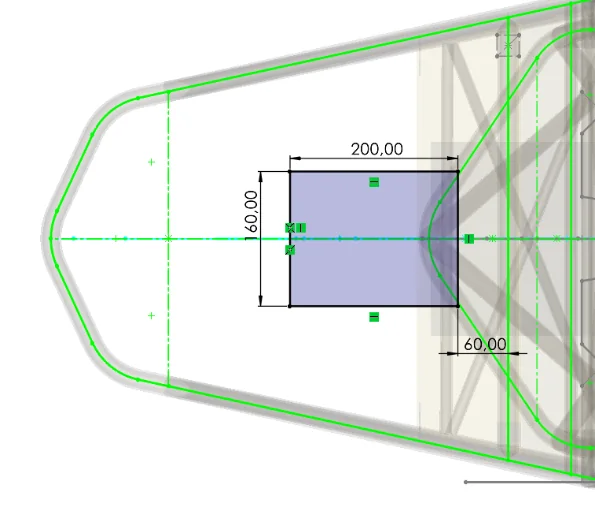
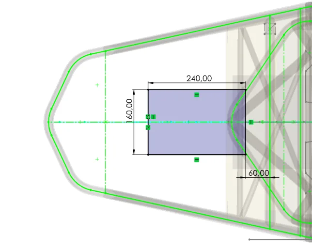
03Concepts
The plate is S275JR steel, carried on Ø12 × 1 mm tubes welded to the main hoop. I compared three ways of supporting it:
- Option 1, two beams. The initial concept, keeping the hole pattern of the previous year's restraint.
- Option 2, three beams. A third beam between the original two, on the main hoop axis.
- Option 3, two beams under the plate. Back to two beams, but extended underneath the plate instead of ending at its edges.
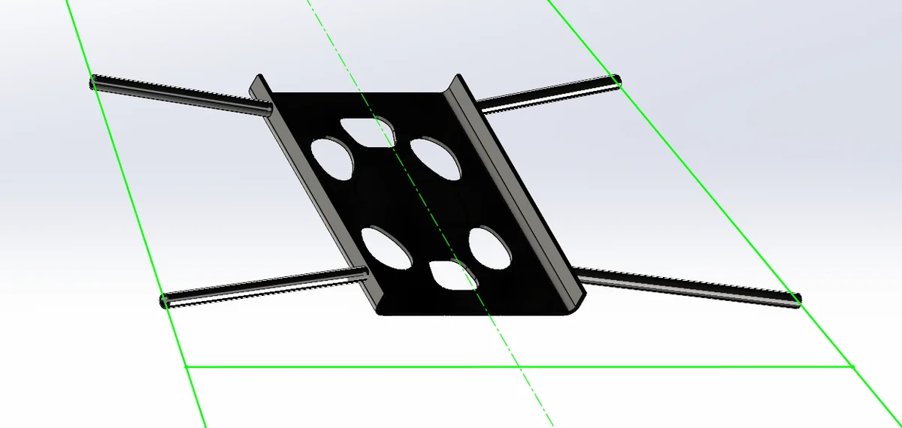
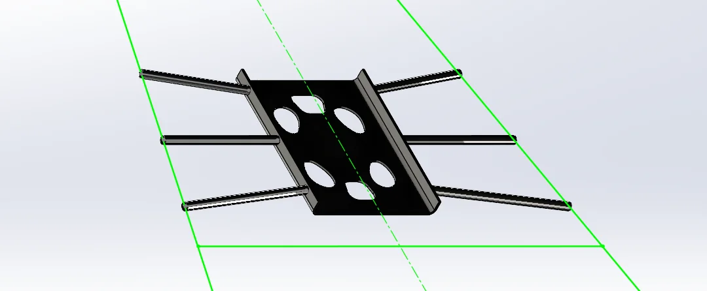
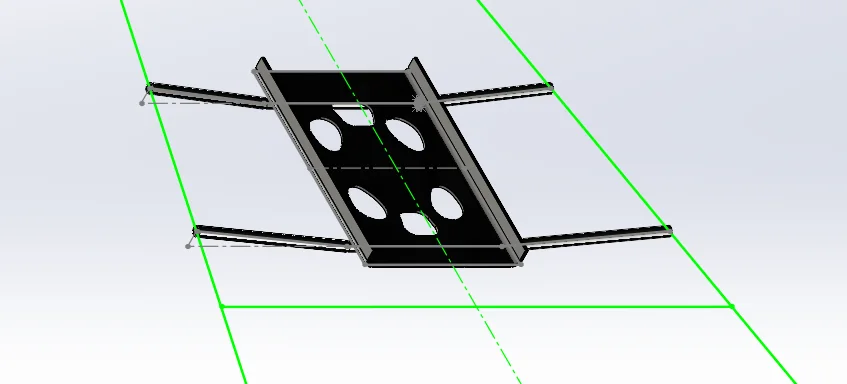
04FEA set-up and results
The tube ends are fixed where they weld to the main hoop. The 890 N rule load is applied rearward over an 80 mm circle in two cases: at the centre of the plate, and at one edge as the worst case. A safety factor below 1 means the part would deform plastically and could not be reused.
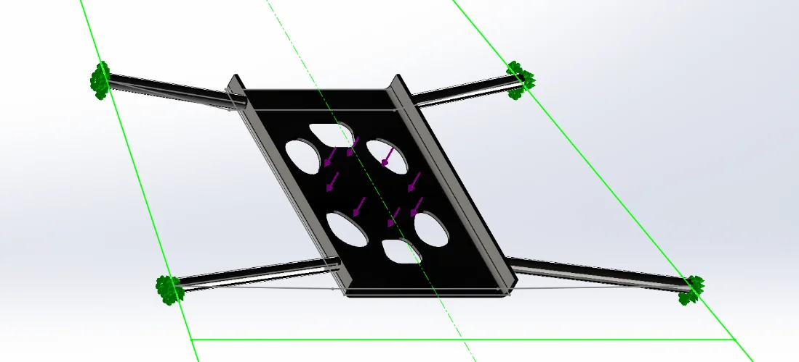
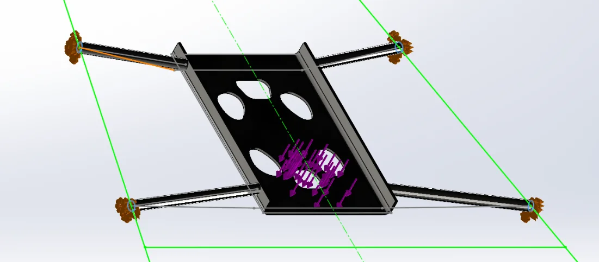
| Concept | FoS, centre load | FoS, edge load |
|---|---|---|
| Option 1, two beams | 0.85 | 0.60 |
| Option 2, three beams | 0.99 | 0.87 |
| Option 3, two beams under plate | 2.16 | 1.35 |
Adding a third beam was not enough: option 2 still failed under both load cases. Running the two beams underneath the plate changed the load path. The plate is supported across its width instead of only at its ends, and the critical point moved from the beam joints to the beam itself. That is where further gains would come from, by increasing the tube diameter or wall thickness.
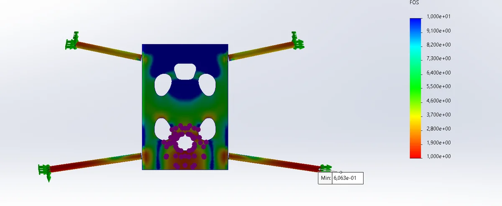
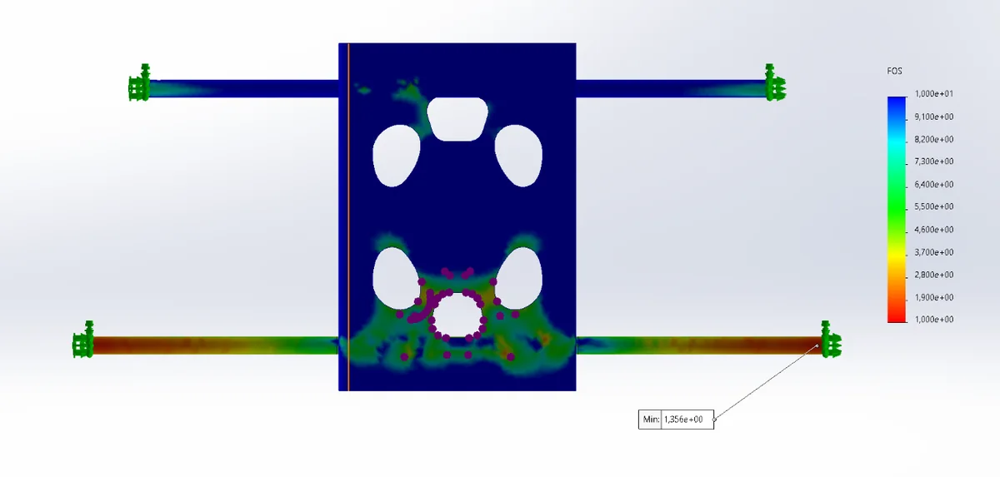
05Limitations and next steps
- Margin. At 1.35 in the worst case the design passes with a modest margin. The analysis points to the beam as the place to add it, with a larger tube diameter or wall thickness.
- Documentation. The report records the load cases and results, but not a mesh-convergence check or a hand calculation of the tube bending. Both would be the first additions to make the result easier to defend.
- Driver data. Driver positions were measured in the previous car. The extra 40 mm of length covers that uncertainty, and a check in the EM-04 itself would close it.
Tools: SolidWorks, SolidWorks Simulation.
Source: EUSS Motorsport, Head Restraint Report EM-04, Frame & Body department, 2023–24.